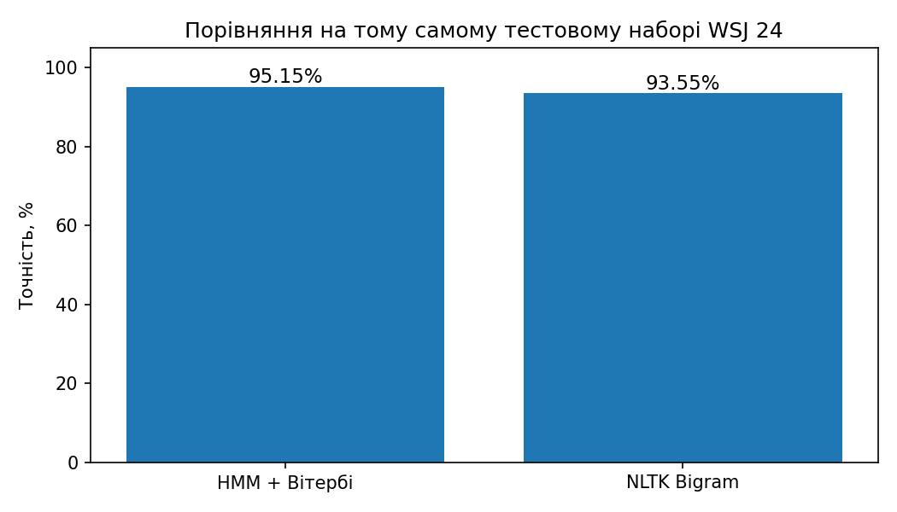
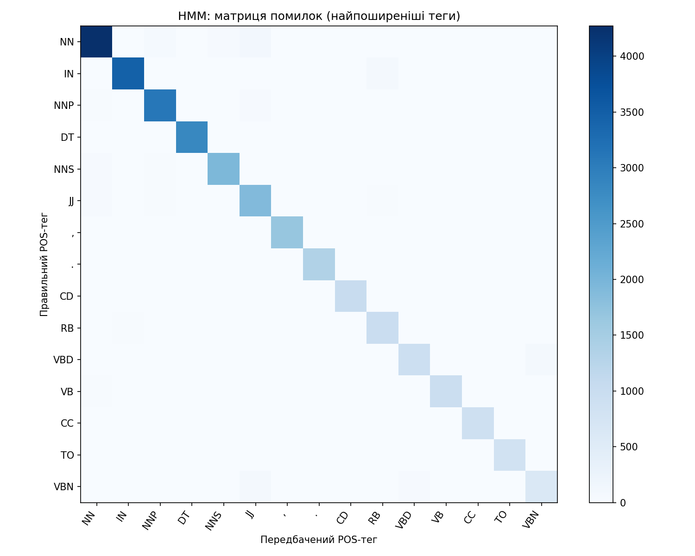

Частиномовний аналіз за допомогою HMM і алгоритму Вітербі
Власна модель POS-тегування, ймовірнісні переходи та емісії, пошук найімовірнішої послідовності тегів і порівняння з NLTK.
English WSJ · Penn Treebank tagsЕкспериментальні результати
Порівняння точності

Матриця помилок HMM

Як працює модель
1. Матриця переходів A
Зі статистики тегів оцінюється ймовірність наступної частини мови. Окремо враховуються початок та кінець речення.
P(tᵢ | tᵢ₋₁)2. Матриця емісій B
Оцінюється ймовірність слова за поточним POS-тегом. Рідкісні слова групуються за морфологічними ознаками.
P(wᵢ | tᵢ)3. Вітербі
Динамічне програмування в логарифмічному просторі визначає найімовірнішу послідовність POS-тегів.
4. Чесне порівняння
NLTK BigramTagger із backoff навчається на тих самих навчальних реченнях і перевіряється на тому самому WSJ 24.
Підсумок
Після виконання Colab тут з’являться фактичні показники та порівняльний висновок.
Точність залежить від корпусу, словника, згладжування та способу обробки невідомих слів. Графіки є результатом Python-експерименту, а не інтерактивною моделлю у браузері.